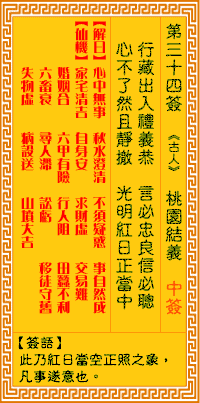

观音灵签第三十四签 【桃园结义】 |
 | |||
出入行藏礼义恭 言必忠良听必聪 心下了然俱洞澈 光明如日正当空 |
||||
| 【吉凶】 | 上上签 | 【宫位】 | 未宫 | |
| 【签语】 | 此卦红日当空正照之象，凡事遂意也。 | |||
| 【解曰】 | 心中无事 秋水澄清 不须疑惑 事自然成 | |||
| 【仙机】 | 此签家宅清吉，自身安，求财虚，交易难，婚姻合，六甲有险，行人阻，田蚕不利，六畜衰，寻人滞，讼亏，移徙守旧，失物虚，病殁送 ，山坟大吉。 | |||
| 【详解】 | 行事言行谦恭有让不脱礼义的规范，忠言必逆耳，但听取受教必能领悟;心中明似镜一切的事物都能照见无碍，就似光明如红日当空晴朗无云。 空中无事，秋水澄清，别无阻碍，自然有成。此签红日当空之象，凡事自来有成。 本签也。红日当空之象。凡事自来有成。君之今也。出入行藏礼义恭。言必忠良听必聪。与友朋。长辈之交。必须礼恭。天下之事能透彻。君之运也。光明则如日正当空时。易言之。空中无事秋水澄清别无阻碍。自然有成者。 此签有”事无绝对”之意。意味当事人，勿太过主观。有时人对于本身善意的想法与主张，往往非常坚持，认为只有如此才是对的。须知出发点是好意诚然可嘉，但”择善”也不能太过固执。每个人对事情的看法与解读都不一样，只要目的都是善意，可以有很多种方法，不一定非得这么做。在坚持自己理念的同时，也应虚心接受、包容学习不同的做法与意见。过于偏执只会造成自我的局限与他人的反感。所谓”信者恒信”，凡事随缘，不必强求自寻烦恼。 | |||
| 【典故】 | 汉献帝时，天下混乱，盗贼蜂起。刘备（玄德）关羽（云长）张飞（翼德）三人志同道合，在张飞家的桃园结拜为义兄弟，刘备为始，关 羽次之，张飞为弟，三人誓说：同心协力，扶危救困，上报国家，下济黎庶。后来三顾茅庐，礼请诸葛亮下山辅佐中兴汉室，从此崭露头角，刘、关、张、三兄弟名留青史。 | |||